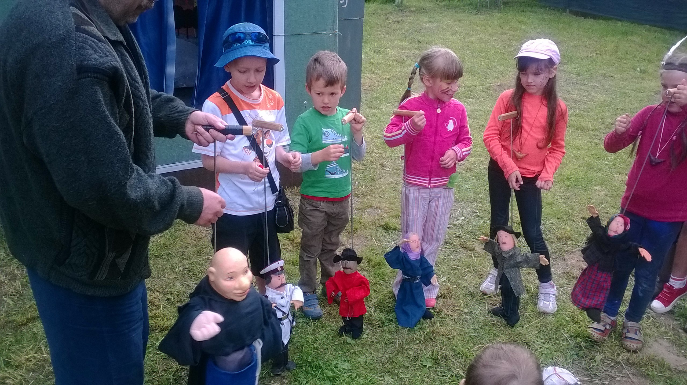
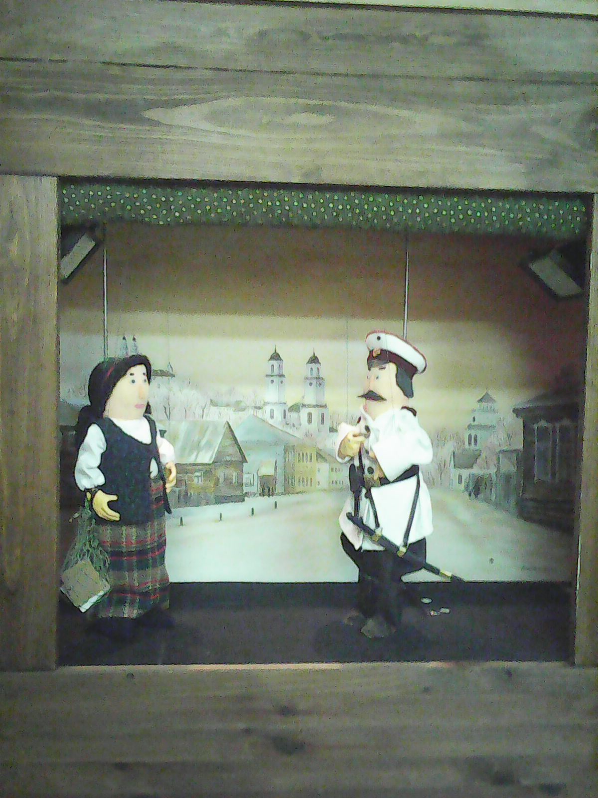
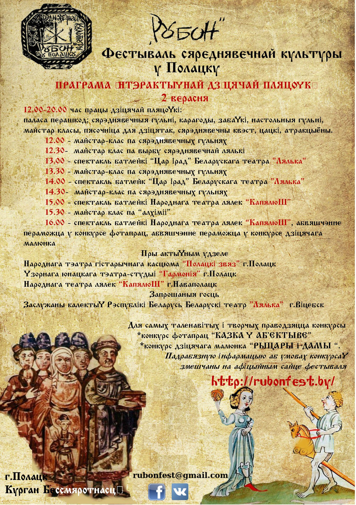

Дзіцячая пляцоўка

> Конкурс фотапрац і малюнкаў <
Дзяцінства – бестурботная пара ў жыцці кожнага. Усе мы бавілі час за рознымі гульнямі. Але калі сёння мы маем рознакаляровыя цацкі з пластыка, то дзеці сярэднявечча забаўляліся з драўлянымі прыладамі і цацкамі. Дзеля таго, каб пазнаёміцца з тым, як гэта было – запрашаем на Дзіцячую пляцоўку Фэста “Рубон”. Тут вы зможаце пабачыць, як бавілі вольны час дзеці ў розныя часы. Для дзяцей будуць арганізаваны розныя гульні, у тым ліку настольныя. На фестывалі сваё адметнае месца зойме інтэрактыўная Дзіцячая пляцоўка. Маленькія аматары гісторыі атрымаюць магчымасць асабіста пазпаёміцца з жыццём сярэднявечных жыхароў, іх побытам і традыцыямі.
Вас чакае знаёмства з сярэднявечнымі гульнямі і забавамі, старажытныя настольныя гульні, самых маленькіх гасцей фестывалю чакаюць дзіцячыя цацкі і забаўкі, атракцыёны. Актыўных чакае паласа перашкод, а самых цікаўных – квэсты. Для маленькіх падрыхтаваны заняткі па вырабе сярэднявечных лялек.

Самым яркім мерапрыемствам дзіцчай пляцоўкі стануць выступы тэатраў батлейкі – самага старажытнага забаўляльнага дзейства. Таксама прапануем вашым дзеткам паўдзельнічаць у конкурсе малюнкаў і конкурсе фотаздымкаў.
Пры актыўным удзеле калектываў:


План мерапрыемстваў дзіцячай пляцоўкі:

Па пытаннях працы Дзіцячай пляцоўкі +375 29 292 97 55
aleksej-koc{at}yandex.ru varvara-koc31{at}yandex.ru